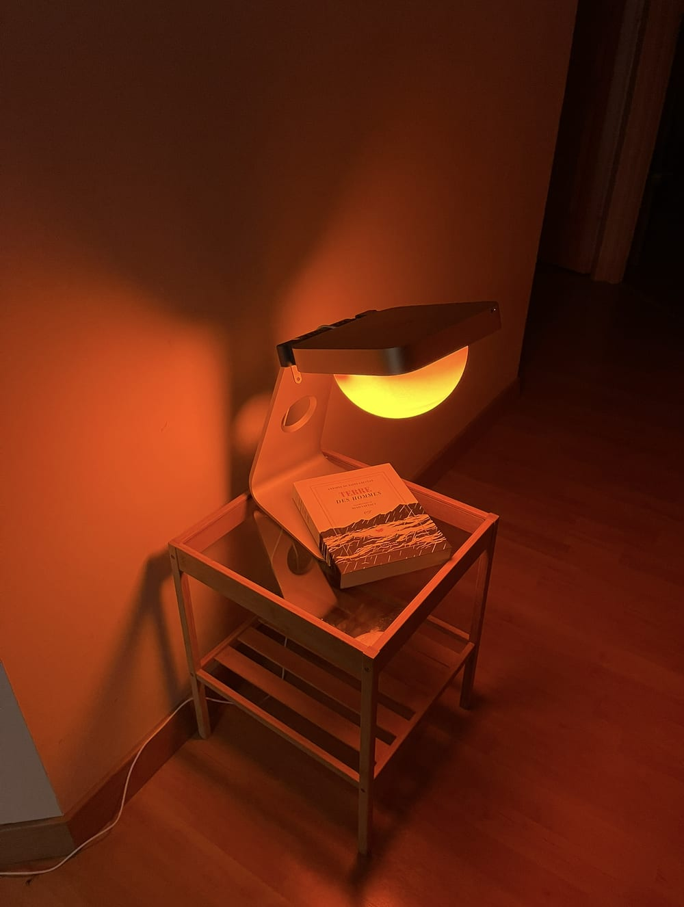

Pas d'angles
Des arrondis partout : plus doux à la main, plus sûrs, et des objets qui vieillissent rarement mal.
Studio de design d'objet
Alva dessine des objets du quotidien aux formes douces. La chaleur du bois, la précision de l'aluminium, l'éclat de l'orange : entre l'utile et le beau, des pièces faites pour durer.
Univers
Le calme du Japandi, réchauffé par le soleil des années 70. Assez sobre pour servir chaque jour, assez singulier pour qu'on le remarque.
Des arrondis partout : plus doux à la main, plus sûrs, et des objets qui vieillissent rarement mal.
On ne voit jamais la source, seulement la lumière. Elle chauffe le bois, glisse sur l'alu, traverse l'orange.
La beauté vient du matériau lui-même : tranche du contreplaqué, patine du cuir, grain du béton.
Partir d'une contrainte plutôt que d'une page blanche. Détourner un objet sans trahir sa forme.
Matières
D'un côté l'organique et le vivant, de l'autre la rigueur et la modernité. Les objets Alva naissent de leur rencontre.
Chêne, frêne, bois huilé.
Strates colorées visibles sur la tranche.
Brossé, il capte la lumière.
Ambré, diffus, jamais banal.
Tanné végétal, qui se patine.
Textures naturelles, douces.
Coulé en moule silicone, teinté.
La plante comme partie de l'objet.
Et une couleur signature : l'orange, celle qui réagit le mieux à la lumière.

Pièce N°01
Deux icônes du design industriel, détournées en une seule lampe. Le pied en aluminium d'un iMac devient la tige. Le corps d'un Mac mini devient la tête.
Dedans, l'ampoule est cachée par une demi-sphère orange imprimée en 3D. La lumière la traverse, redescend et remonte sur l'alu brossé : la lampe semble flotter.
Démarche
Chaque objet passe par les mêmes étapes, sans raccourci. On teste tôt, on corrige souvent, et on ne lance rien qui n'ait été tenu en main.
Un objet à détourner, une matière, un usage. Jamais une page blanche.
Croquis, puis modélisation pour caler les volumes et les cotes.
Impression 3D, carton, mousse : une première forme à tenir en main.
On essaie, on corrige, on recommence, avec les vraies matières.
Finitions, photos, puis une petite série, fabriquée près d'ici.
Engagements
Ce qui guide chaque choix de forme, de matière et de fabrication.
Chêne et frêne français, lin, céramique et artisans locaux dès que c'est possible. Une provenance qu'on peut raconter.
Des pièces vissées plutôt que collées, des composants standards. Un objet Alva se répare, se modifie, se transmet.
Des prises en main faciles, aucune arête vive. Un objet bien pensé sert aussi les mains fragiles, âgées ou appareillées.
La plante comme une partie de l'objet, pas comme un accessoire posé à côté.
À l'atelier
Ce qui se dessine en ce moment, de la plus simple à la plus ambitieuse.
Vide-poches, bougeoirs, cache-pots. Moules en silicone, béton teinté dans la masse.
Une nouvelle lumière, pensée de zéro autour de ce que le verre doit raconter.
Fines couches cintrées et collées sur gabarit, strates colorées sur la tranche.
Une géométrie rigoureuse, une palette réduite : orange, noir, blanc.
L'assise, quand le bois n'aura plus de secret.
Inspirations
Le calme japonais, la chaleur scandinave, la poésie française et le soleil des années 70.
Contact
Commande, collaboration, presse, ou simple curiosité : le studio répond à chaque message.
Adresse et réseaux de l'atelier très bientôt.